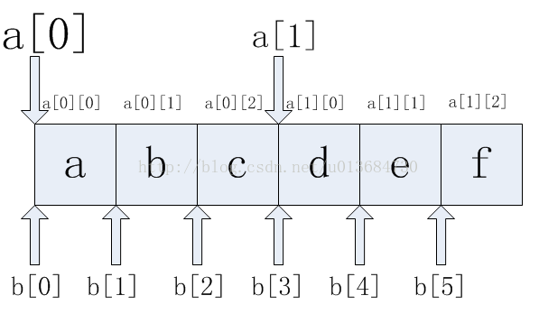
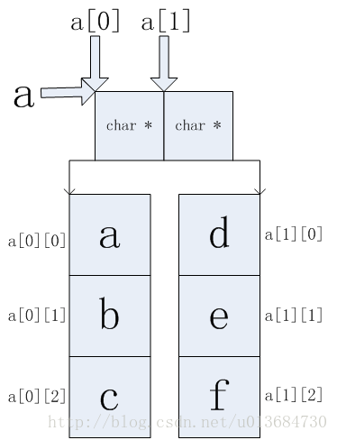

本文主要记录了一些常用的 C++ 相关的概念和操作。
string 与 char* 互转
1 | // string to char* |
释放 std::vector 所占用的内存
在容器 vector 中，其内存占用的空间是只增不减的，比如说首先分配了 10,000 个字节，然后 erase 掉后面 9999个，则虽然有效元素只有一个，但是内存占用仍为 10,000 个。所有内存空间在 vector 析构时回收。
一般，我们都会通过 vector 中成员函数 clear 进行一些清除操作，但它清除的是所有的元素，使 vector 的大小减少至 0，却不能减小 vector 占用的内存。要避免 vector 持有它不再需要的内存，这就需要一种方法来使得它从曾经的容量减少至它现在需要的容量，这样减少容量的方法被称为 “收缩到合适（shrink to fit）”。
使用以下代码可以实现此功能:
1 | vector<T>().swap(X) // X 的类型为 std::vector<T>; |
其背后原理为:
vector()使用vector的默认构造函数建立临时vector对象，再在该临时对象上调用swap成员，swap调用之后对象X占用的空间就等于一个默认构造的对象的大小，临时对象就具有原来对象X的大小，而该临时对象随即就会被析构，从而其占用的空间也被释放。
二维数组和双重指针在内存中的差别
首先，下例是不可行的
1 |
|
myputs(char **p) 接受双重指针作为参数，main() 函数将二维数组的头指针赋给双重指针，并作为 myputs(char **p) 的参数传入，再使用 p[i][j] 的方式访问某个元素。这是不行的，而这与两者的内存分布有关。
二维数组的内存分布
定义了二维数组后，就会在内存中分配一块逻辑上连续的内存块。
char c[10][10]，系统就会分配一块 100 字节的连续内存。也就是说这样的二维数组跟一维数组char c[100]具有相似的内存分布。
二维数组的内存分布如下：

双重指针的内存分布
双重指针的内存分配一般采取动态方式

可以看出，当将二维数组的头指针赋值给双重指针后，再使用 p[i][j] 的方式访问里面的元素，就会出现错误。这是因为，二维数组的内存是以连续的方式分配的，但是在访问时，却使用了双重指针的方式进行访问，这就会导致段错误。
总结
char **p和char p[2][3]之间不能相互传递参数，因为它们具体的内存分布不一样，这样在运行时就会出现段错误。
此外还需注意的一点：
二维数组中的a[i][j]和双重指针中的a[i][j]的意思是不一样的。
二维数组int a[10][10]中，a[i][j]指的是第i行第j列数元素。
双重指针中int **a中，a[i][j]指的是第i个存放int *指针所指向地址中的第j个元素。也就是*(*(a+i)+j)。